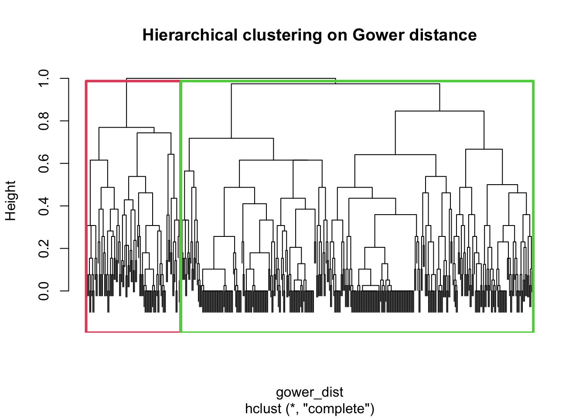
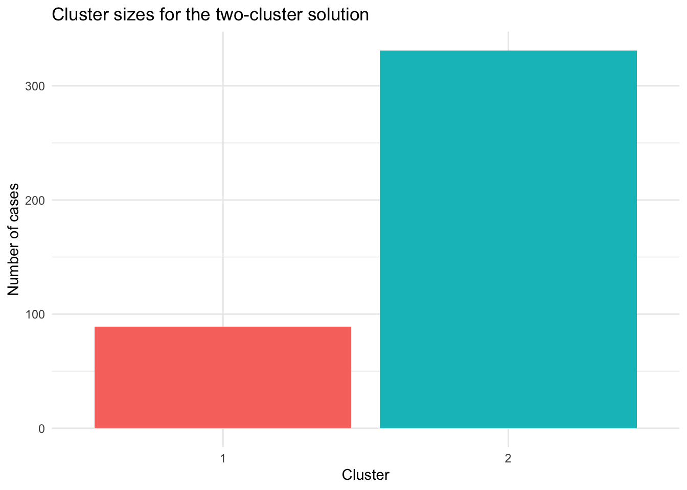
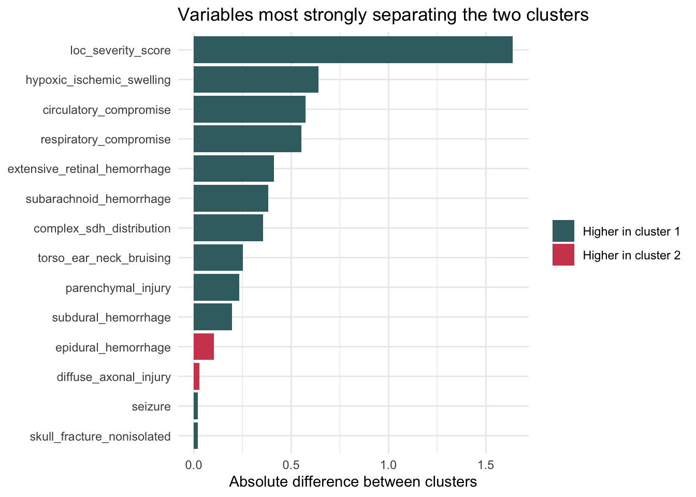
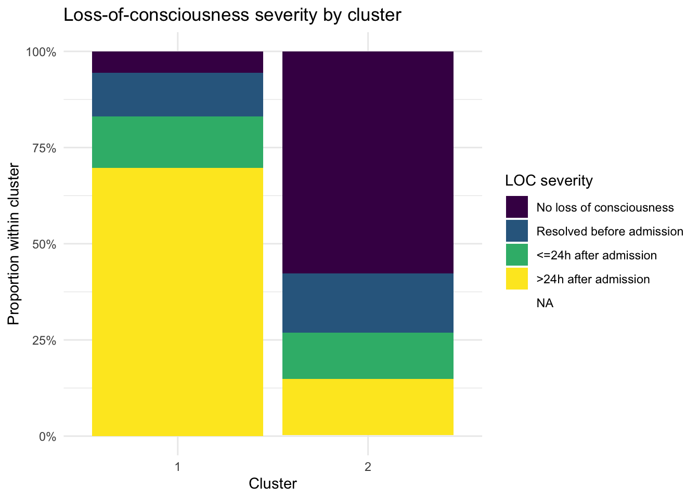
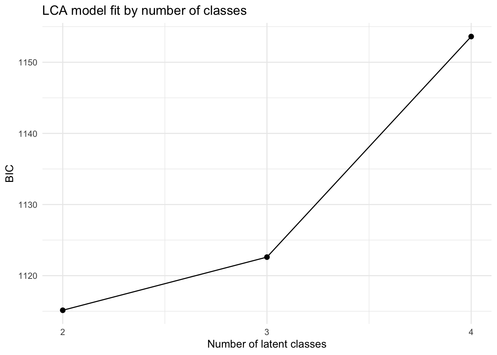
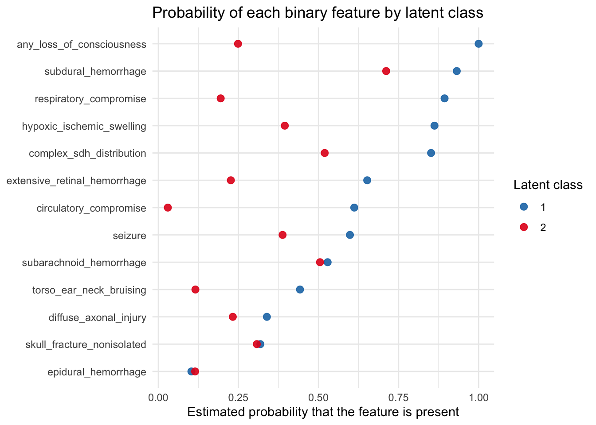
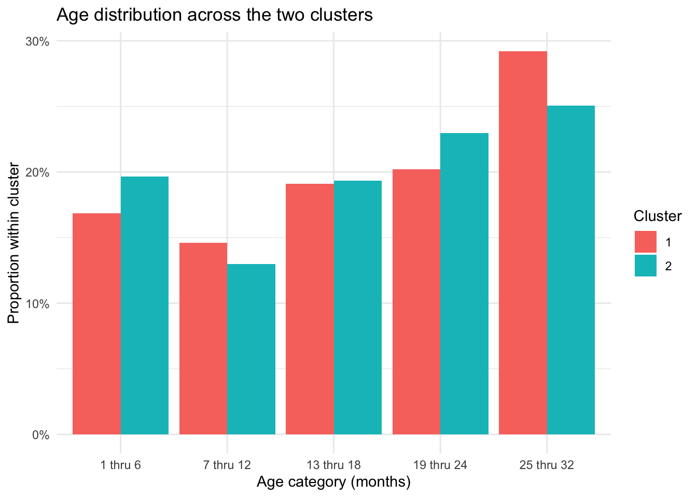
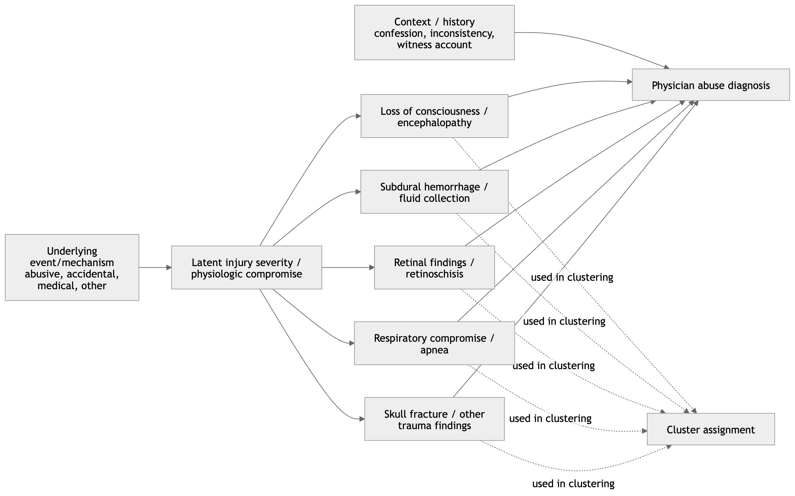

Show code
library(tidyverse)
library(readxl)
library(cluster)
library(knitr)
library(poLCA)We begin by loading the packages used throughout the analysis.
library(tidyverse)
library(readxl)
library(cluster)
library(knitr)
library(poLCA)This document replicates the Boos clustering analysis as closely as possible with the variables available in ../Data/Data.xlsx.
Because the exact feature list and clustering settings from the paper have not yet been fully extracted from the PDF, this file uses an explicit Boos-style approximation:
k.The key design choice is that every clustering variable is defined in one place below, so the analysis can be tightened once you confirm the exact variables in the article.
Chris described this dataset as a set of 420 PediBIRN cases used in the Hymel et al. and Boos et al. papers. His main interest was the Boos 2022 clustering analysis, which used a Gower matrix and produced a two-cluster solution that Boos interpreted as including an abuse-associated cluster. Chris noted, however, that the cluster profiles can also be read differently, because the group Boos interpreted as abuse-associated appears to be heavily characterized by severity of intracranial pathology, including prolonged loss of consciousness and hypoxia. He also noted concerns about the later Boos 2025 mediation analysis, particularly the treatment of outcomes such as loss of consciousness and subdural hemorrhage as if they were exposure proxies. In his own exploratory work, Chris found that a two-class latent class analysis broadly reproduced the Boos clustering pattern, and that a three-class solution appeared to separate cases mainly by increasing levels of loss of consciousness severity, with retinal hemorrhage and subdural hemorrhage increasing across classes. This analysis is therefore motivated both by replication of the Boos clustering results and by the question of whether the main clustering signal reflects abuse specifically or rather the severity of intracranial injury.
We now load the two patient sheets and combine them into a single dataset.
dat_control <- read_excel("../Data/Data.xlsx", sheet = "Eligible Control Patients") |>
mutate(data_source = "control")
dat_treatment <- read_excel("../Data/Data.xlsx", sheet = "Eligible Intervention Patients") |>
mutate(data_source = "intervention")
dat_raw <- bind_rows(dat_control, dat_treatment)
nrow(dat_raw)[1] 432We now map the raw spreadsheet columns into the variables used for clustering. We also create the derived severity and injury indicators used later in the analysis.
feature_map <- c(
patient_id = "Patient ID",
age_months = "Months",
respiratory_compromise = "Q4.2.1. Any clinically-significant respiratory compromise at the scene of injury, during transport, in the ED, or prior to hospital admission?",
circulatory_compromise = "Q4.2.2. Any clinically-significant circulatory compromise at the scene of injury, during transport, in the ED, or prior to hospital admission?",
seizure = "Q4.2.3. Seizure(s) at the scene of injury, during transport, in the ED, or prior to hospital admission?",
loc_present = "Q4.2.4. A clear impairment or loss of consciousness at the scene of injury, during transport, in the ED, or prior to hospital admission?",
loc_resolved_pre_admission = "Q4.2.5. Did this child's clear impairment or loss of consciousness resolve prior to hospital admission?",
loc_gt_24h = "Q4.2.6. Did this child's clear impairment or loss of consciousness last >24 hours after admission?",
loc_posturing = "Q4.2.7. Was this child's clear impairment or loss of consciousness ever associated with flaccidity, decorticate or decerebrate posturing?",
torso_ear_neck_bruising = "Q4.3.2. Any bruising involving the child's ear(s), neck or torso?",
skull_fracture = "Q4.4.1. Any skull fracture(s)?",
isolated_linear_parietal_fracture = "Q4.4.2.1. What skull fracture(s) did the child manifest? Only an isolated, unilateral, nondiastatic, linear, parietal skull fracture?",
epidural_hemorrhage = "Q4.4.3. Any epidural hemorrhage(s)?",
subdural_hemorrhage = "Q4.4.4. Any subdural hemorrhage(s) or fluid collection(s)?",
bilateral_sdh = "Q4.4.5.2. Bilateral, overlying both cerebral hemispheres?",
interhemispheric_sdh = "Q4.4.5.3 Involving or extending from the interhemispheric space?",
subarachnoid_hemorrhage = "Q4.4.7. Any subarachnoid hemorrhage(s)?",
parenchymal_injury = "Q4.4.8. Any brain parenchymal contusion(s), laceration(s) or hemorrhage(s)?",
diffuse_axonal_injury = "Q4.4.11. Are these brain parenchymal contusion(s), laceration(s) or hemorrhage(s) reasonably characterized as diffuse traumatic axonal injury?",
hypoxic_ischemic_swelling = "Q4.4.12. Any brain hypoxia, ischemia and/or swelling?",
extensive_retinal_hemorrhage = "Q5.3.2.9. Retinal hemorrhage(s) described by an ophthalmologist as dense, extensive, covering a large surface area and/or extending to the ora serrata?"
)
required_columns <- unname(feature_map)
missing_columns <- setdiff(required_columns, names(dat_raw))
missing_columnscharacter(0)to_binary_factor <- function(x) {
case_when(
is.na(x) ~ NA_character_,
x == 1 ~ "Yes",
x == 0 ~ "No",
TRUE ~ as.character(x)
) |>
factor(levels = c("No", "Yes"))
}
relabel_by_loc_severity <- function(cluster, loc_severity) {
cluster_map <- tibble(
cluster = as.character(cluster),
loc_score = as.numeric(loc_severity)
) |>
group_by(cluster) |>
summarise(mean_loc_score = mean(loc_score, na.rm = TRUE), .groups = "drop") |>
arrange(desc(mean_loc_score), cluster)
factor(
cluster,
levels = cluster_map$cluster,
labels = seq_len(nrow(cluster_map))
)
}
dat_analysis <- dat_raw |>
transmute(
patient_id = .data[[feature_map["patient_id"]]],
data_source,
age_months = .data[[feature_map["age_months"]]],
respiratory_compromise = to_binary_factor(.data[[feature_map["respiratory_compromise"]]]),
circulatory_compromise = to_binary_factor(.data[[feature_map["circulatory_compromise"]]]),
seizure = to_binary_factor(.data[[feature_map["seizure"]]]),
torso_ear_neck_bruising = to_binary_factor(.data[[feature_map["torso_ear_neck_bruising"]]]),
skull_fracture_nonisolated = case_when(
.data[[feature_map["skull_fracture"]]] == 0 ~ "No",
.data[[feature_map["skull_fracture"]]] == 1 &
.data[[feature_map["isolated_linear_parietal_fracture"]]] == 1 ~ "No",
.data[[feature_map["skull_fracture"]]] == 1 ~ "Yes",
TRUE ~ NA_character_
) |> factor(levels = c("No", "Yes")),
epidural_hemorrhage = to_binary_factor(.data[[feature_map["epidural_hemorrhage"]]]),
subdural_hemorrhage = to_binary_factor(.data[[feature_map["subdural_hemorrhage"]]]),
complex_sdh_distribution = case_when(
.data[[feature_map["subdural_hemorrhage"]]] == 0 ~ "No",
.data[[feature_map["bilateral_sdh"]]] == 1 |
.data[[feature_map["interhemispheric_sdh"]]] == 1 ~ "Yes",
.data[[feature_map["subdural_hemorrhage"]]] == 1 ~ "No",
TRUE ~ NA_character_
) |> factor(levels = c("No", "Yes")),
subarachnoid_hemorrhage = to_binary_factor(.data[[feature_map["subarachnoid_hemorrhage"]]]),
parenchymal_injury = to_binary_factor(.data[[feature_map["parenchymal_injury"]]]),
diffuse_axonal_injury = to_binary_factor(.data[[feature_map["diffuse_axonal_injury"]]]),
hypoxic_ischemic_swelling = to_binary_factor(.data[[feature_map["hypoxic_ischemic_swelling"]]]),
extensive_retinal_hemorrhage = to_binary_factor(.data[[feature_map["extensive_retinal_hemorrhage"]]]),
loc_severity = case_when(
.data[[feature_map["loc_present"]]] == 0 ~ "No loss of consciousness",
.data[[feature_map["loc_present"]]] == 1 &
.data[[feature_map["loc_resolved_pre_admission"]]] == 1 ~ "Resolved before admission",
.data[[feature_map["loc_present"]]] == 1 &
.data[[feature_map["loc_gt_24h"]]] == 1 ~ ">24h after admission",
.data[[feature_map["loc_present"]]] == 1 &
.data[[feature_map["loc_posturing"]]] == 1 ~ ">24h after admission",
.data[[feature_map["loc_present"]]] == 1 ~ "<=24h after admission",
TRUE ~ NA_character_
) |> ordered(levels = c(
"No loss of consciousness",
"Resolved before admission",
"<=24h after admission",
">24h after admission"
))
) |>
mutate(
patient_id = coalesce(as.character(patient_id), paste0("row_", row_number()))
)
cluster_vars <- c(
"respiratory_compromise",
"circulatory_compromise",
"seizure",
"torso_ear_neck_bruising",
"skull_fracture_nonisolated",
"epidural_hemorrhage",
"subdural_hemorrhage",
"complex_sdh_distribution",
"subarachnoid_hemorrhage",
"parenchymal_injury",
"diffuse_axonal_injury",
"hypoxic_ischemic_swelling",
"extensive_retinal_hemorrhage",
"loc_severity"
)
dat_cluster <- dat_analysis |>
filter(if_any(all_of(cluster_vars), ~ !is.na(.x)))
missingness_summary <- dat_cluster |>
summarise(across(all_of(cluster_vars), ~ mean(is.na(.x)))) |>
pivot_longer(everything(), names_to = "variable", values_to = "missing_fraction") |>
arrange(desc(missing_fraction))
kable(missingness_summary, digits = 2, caption = "Table 1. Clustering variables and missingness")| variable | missing_fraction |
|---|---|
| diffuse_axonal_injury | 0.85 |
| respiratory_compromise | 0.00 |
| circulatory_compromise | 0.00 |
| seizure | 0.00 |
| torso_ear_neck_bruising | 0.00 |
| loc_severity | 0.00 |
| skull_fracture_nonisolated | 0.00 |
| epidural_hemorrhage | 0.00 |
| subdural_hemorrhage | 0.00 |
| complex_sdh_distribution | 0.00 |
| subarachnoid_hemorrhage | 0.00 |
| parenchymal_injury | 0.00 |
| hypoxic_ischemic_swelling | 0.00 |
| extensive_retinal_hemorrhage | 0.00 |
In the data-preparation step, the eligible control and intervention sheets were first combined into a single analysis dataset. I then selected a set of clinical and radiologic variables that most closely matched the features used in the Boos clustering analysis and recoded them into a form suitable for unsupervised clustering. Most variables were converted to binary indicators (Yes/No), while loss of consciousness was collapsed into an ordinal severity variable with categories for none, resolved before admission, less than or equal to 24 hours after admission, and greater than 24 hours after admission. I also derived a small number of composite variables, such as non-isolated skull fracture and complex subdural hemorrhage distribution, to better capture clinically meaningful patterns. Finally, I reviewed missingness across the selected variables so the clustering results could be interpreted with the degree of data completeness in mind.
The table below lists the variables included in the clustering analysis and shows the proportion of missing values for each one. This provides a quick check of the feature set used to construct the Gower distance matrix and highlights where incomplete data may affect the clustering results.
Here we compute the Gower distance matrix and compare candidate cluster solutions using average silhouette width.
cluster_input <- dat_cluster |>
dplyr::select(all_of(cluster_vars))
gower_dist <- daisy(cluster_input, metric = "gower")
hclust_fit <- hclust(gower_dist, method = "complete")
candidate_k <- 2:6
silhouette_tbl <- map_dfr(candidate_k, function(k) {
assignment <- cutree(hclust_fit, k = k)
sil <- silhouette(assignment, gower_dist)
tibble(
k = k,
average_silhouette_width = summary(sil)$avg.width
)
})
kable(silhouette_tbl, digits = 3, caption = "Table 2. Average silhouette width by number of clusters")| k | average_silhouette_width |
|---|---|
| 2 | 0.265 |
| 3 | 0.191 |
| 4 | 0.178 |
| 5 | 0.182 |
| 6 | 0.185 |
best_k <- silhouette_tbl |>
slice_max(average_silhouette_width, n = 1, with_ties = FALSE) |>
pull(k)
best_k[1] 2Among the cluster solutions examined, the two-cluster solution had the highest average silhouette width, with a value of 0.265 compared with lower values for three through six clusters. This indicates that, relative to the other candidate solutions, a two-cluster structure provides the best fit to the data under this clustering approach. However, the silhouette value remains fairly low in absolute terms, which suggests that separation between clusters is modest rather than strong. In other words, the data are more consistent with two clusters than with larger numbers of clusters, but they do not show evidence of two sharply distinct or highly natural groupings.
We now apply the chosen clustering solutions and relabel the clusters so that cluster 1 corresponds to the higher-severity profile.
dat_cluster <- dat_cluster |>
mutate(
cluster_2 = relabel_by_loc_severity(cutree(hclust_fit, k = 2), loc_severity),
cluster_3 = relabel_by_loc_severity(cutree(hclust_fit, k = 3), loc_severity),
cluster_4 = relabel_by_loc_severity(cutree(hclust_fit, k = 4), loc_severity),
cluster_best = factor(cutree(hclust_fit, k = best_k))
)We next use latent class analysis as a complementary, model-based method for the same categorical feature set. The LCA is fit on complete cases only, compares two-, three-, and four-class solutions, and uses BIC to choose the preferred number of classes before relabeling classes so that class 1 corresponds to the higher-severity profile.
We first show the dendrogram produced by the hierarchical clustering algorithm.
plot(hclust_fit, labels = FALSE, main = "Hierarchical clustering on Gower distance")
par(lwd = 3)
rect.hclust(hclust_fit, k = 2, border = 2:3)
par(lwd = 1)This plot shows the hierarchical clustering structure of the cases based on the Gower dissimilarity matrix. Each branch represents how similar or dissimilar cases are, with branches joining lower in the tree indicating greater similarity. The rectangles show the two-cluster solution obtained by cutting the dendrogram at k = 2, which is the solution carried forward for the main cluster summaries below.
We next summarize the number of cases in each of the two clusters.
cluster_size_tbl <- dat_cluster |>
count(cluster_2, name = "n") |>
mutate(prop = n / sum(n))
kable(cluster_size_tbl, digits = 3, caption = "Table 3. Cluster sizes for the two-cluster solution")| cluster_2 | n | prop |
|---|---|---|
| 1 | 89 | 0.212 |
| 2 | 331 | 0.788 |
We then show the same cluster-size comparison visually.
ggplot(cluster_size_tbl, aes(x = cluster_2, y = n, fill = cluster_2)) +
geom_col(show.legend = FALSE) +
labs(
title = "Cluster sizes for the two-cluster solution",
x = "Cluster",
y = "Number of cases"
) +
theme_minimal()
This plot shows the size of each cluster in the two-cluster solution. It makes the imbalance between the two groups easier to see than the table alone.
We now rank the variables by how strongly they differ between the two clusters.
driver_table_binary <- dat_cluster |>
mutate(across(all_of(cluster_vars[cluster_vars != "loc_severity"]), ~ .x == "Yes")) |>
pivot_longer(
cols = all_of(cluster_vars[cluster_vars != "loc_severity"]),
names_to = "variable",
values_to = "value"
) |>
group_by(variable, cluster_2) |>
summarise(proportion_yes = mean(value, na.rm = TRUE), .groups = "drop") |>
pivot_wider(names_from = cluster_2, values_from = proportion_yes, names_prefix = "cluster_") |>
mutate(
difference = cluster_2 - cluster_1,
abs_difference = abs(difference)
)
driver_table_loc <- dat_cluster |>
transmute(
variable = "loc_severity_score",
cluster_2,
value = as.numeric(loc_severity) - 1
) |>
group_by(variable, cluster_2) |>
summarise(mean_score = mean(value, na.rm = TRUE), .groups = "drop") |>
pivot_wider(names_from = cluster_2, values_from = mean_score, names_prefix = "cluster_") |>
mutate(
difference = cluster_2 - cluster_1,
abs_difference = abs(difference)
)
driver_table <- bind_rows(driver_table_binary, driver_table_loc) |>
arrange(desc(abs_difference))
kable(driver_table, digits = 3, caption = "Table 5. Variables ranked by separation between clusters")| variable | cluster_1 | cluster_2 | difference | abs_difference |
|---|---|---|---|---|
| loc_severity_score | 2.472 | 0.833 | -1.639 | 1.639 |
| hypoxic_ischemic_swelling | 0.843 | 0.202 | -0.640 | 0.640 |
| circulatory_compromise | 0.742 | 0.167 | -0.575 | 0.575 |
| respiratory_compromise | 0.865 | 0.312 | -0.553 | 0.553 |
| extensive_retinal_hemorrhage | 0.640 | 0.230 | -0.411 | 0.411 |
| subarachnoid_hemorrhage | 0.607 | 0.224 | -0.383 | 0.383 |
| complex_sdh_distribution | 0.809 | 0.453 | -0.356 | 0.356 |
| torso_ear_neck_bruising | 0.393 | 0.142 | -0.251 | 0.251 |
| parenchymal_injury | 0.337 | 0.103 | -0.234 | 0.234 |
| subdural_hemorrhage | 0.876 | 0.680 | -0.197 | 0.197 |
| epidural_hemorrhage | 0.067 | 0.169 | 0.102 | 0.102 |
| diffuse_axonal_injury | 0.267 | 0.294 | 0.027 | 0.027 |
| seizure | 0.348 | 0.327 | -0.021 | 0.021 |
| skull_fracture_nonisolated | 0.303 | 0.284 | -0.019 | 0.019 |
This table ranks the clustering variables by how strongly they differ between the two clusters. For the binary variables, the values are the proportion of patients with that feature in each cluster; for loc_severity_score, the values are the mean ordinal loss-of-consciousness score, with higher values indicating greater severity. Variables near the top of this table are the most plausible drivers of the two-cluster split, which helps assess whether the separation appears to reflect abuse-related findings, neurologic severity, or some other pattern.
We then display those separating variables visually.
driver_plot_tbl <- driver_table |>
mutate(
variable = fct_reorder(variable, abs_difference)
)
ggplot(driver_plot_tbl, aes(x = abs_difference, y = variable, fill = difference > 0)) +
geom_col() +
scale_fill_manual(
values = c("#3C6E71", "#D1495B"),
labels = c("Higher in cluster 1", "Higher in cluster 2"),
name = NULL
) +
labs(
title = "Variables most strongly separating the two clusters",
x = "Absolute difference between clusters",
y = NULL
) +
theme_minimal()
This plot visualizes the variables that most strongly distinguish the two clusters. Longer bars indicate larger differences between cluster 1 and cluster 2, making it easier to see whether the separation is being driven primarily by neurologic severity variables, abuse-correlated findings, or a mixture of both.
We now examine how loss-of-consciousness severity is distributed across the two clusters.
table1_loc <- dat_cluster |>
count(cluster_2, loc_severity) |>
group_by(cluster_2) |>
mutate(prop = n / sum(n)) |>
ungroup()
kable(table1_loc, digits = 3, caption = "Table 6. Loss-of-consciousness severity by cluster")| cluster_2 | loc_severity | n | prop |
|---|---|---|---|
| 1 | No loss of consciousness | 5 | 0.056 |
| 1 | Resolved before admission | 10 | 0.112 |
| 1 | <=24h after admission | 12 | 0.135 |
| 1 | >24h after admission | 62 | 0.697 |
| 2 | No loss of consciousness | 191 | 0.577 |
| 2 | Resolved before admission | 51 | 0.154 |
| 2 | <=24h after admission | 40 | 0.121 |
| 2 | >24h after admission | 48 | 0.145 |
| 2 | NA | 1 | 0.003 |
We then show the same loss-of-consciousness pattern in a stacked bar chart.
ggplot(table1_loc, aes(x = cluster_2, y = prop, fill = loc_severity)) +
geom_col() +
scale_y_continuous(labels = scales::percent_format(accuracy = 1)) +
labs(
title = "Loss-of-consciousness severity by cluster",
x = "Cluster",
y = "Proportion within cluster",
fill = "LOC severity"
) +
theme_minimal()
Table 6 shows the distribution of loss-of-consciousness severity across the two clusters. In the current results, loc_severity is strongly associated with cluster membership: cluster 1 is dominated by patients with loss of consciousness lasting more than 24 hours after admission, whereas cluster 2 is dominated by patients with no loss of consciousness.
Figure ?@fig-loc-plot shows the same pattern visually. The sharp contrast between the two stacked bars suggests that neurologic severity is a major driver of the clustering structure.
We now check whether loss-of-consciousness severity still structures the data when three clusters are allowed.
table_loc_3 <- dat_cluster |>
count(cluster_3, loc_severity) |>
group_by(cluster_3) |>
mutate(prop = n / sum(n)) |>
ungroup()
kable(table_loc_3, digits = 3, caption = "Table 7. Loss-of-consciousness severity in the three-cluster solution")| cluster_3 | loc_severity | n | prop |
|---|---|---|---|
| 1 | No loss of consciousness | 5 | 0.056 |
| 1 | Resolved before admission | 10 | 0.112 |
| 1 | <=24h after admission | 12 | 0.135 |
| 1 | >24h after admission | 62 | 0.697 |
| 2 | No loss of consciousness | 96 | 0.500 |
| 2 | Resolved before admission | 34 | 0.177 |
| 2 | <=24h after admission | 18 | 0.094 |
| 2 | >24h after admission | 43 | 0.224 |
| 2 | NA | 1 | 0.005 |
| 3 | No loss of consciousness | 95 | 0.683 |
| 3 | Resolved before admission | 17 | 0.122 |
| 3 | <=24h after admission | 22 | 0.158 |
| 3 | >24h after admission | 5 | 0.036 |
This table shows the distribution of loss-of-consciousness severity across the three-cluster solution. In the current results, one cluster remains strongly dominated by prolonged loss of consciousness lasting more than 24 hours after admission, while the other two clusters contain much larger proportions of patients with no loss of consciousness. This suggests that loss-of-consciousness severity continues to matter even when the data are partitioned into three clusters.
We then repeat the same check for a four-cluster solution.
table_loc_4 <- dat_cluster |>
count(cluster_4, loc_severity) |>
group_by(cluster_4) |>
mutate(prop = n / sum(n)) |>
ungroup()
kable(table_loc_4, digits = 3, caption = "Table 8. Loss-of-consciousness severity in the four-cluster solution")| cluster_4 | loc_severity | n | prop |
|---|---|---|---|
| 1 | No loss of consciousness | 5 | 0.056 |
| 1 | Resolved before admission | 10 | 0.112 |
| 1 | <=24h after admission | 12 | 0.135 |
| 1 | >24h after admission | 62 | 0.697 |
| 2 | No loss of consciousness | 8 | 0.105 |
| 2 | Resolved before admission | 10 | 0.132 |
| 2 | <=24h after admission | 14 | 0.184 |
| 2 | >24h after admission | 43 | 0.566 |
| 2 | NA | 1 | 0.013 |
| 3 | No loss of consciousness | 95 | 0.683 |
| 3 | Resolved before admission | 17 | 0.122 |
| 3 | <=24h after admission | 22 | 0.158 |
| 3 | >24h after admission | 5 | 0.036 |
| 4 | No loss of consciousness | 88 | 0.759 |
| 4 | Resolved before admission | 24 | 0.207 |
| 4 | <=24h after admission | 4 | 0.034 |
This table shows the distribution of loss-of-consciousness severity across the four-cluster solution. In the current results, the four-cluster analysis still retains a cluster dominated by prolonged loss of consciousness, while the other clusters are more concentrated in the lower-severity categories, especially no loss of consciousness. Taken together, the three-cluster and four-cluster solutions suggest that loss of consciousness remains an important organizing feature of the clustering structure rather than being an artifact of forcing only two clusters.
We now recode the clustering variables into the categorical format required for latent class analysis.
lca_vars <- c(
"respiratory_compromise",
"circulatory_compromise",
"seizure",
"torso_ear_neck_bruising",
"skull_fracture_nonisolated",
"epidural_hemorrhage",
"subdural_hemorrhage",
"complex_sdh_distribution",
"subarachnoid_hemorrhage",
"parenchymal_injury",
"diffuse_axonal_injury",
"hypoxic_ischemic_swelling",
"extensive_retinal_hemorrhage",
"loc_severity"
)
lca_data <- dat_cluster |>
transmute(
patient_id,
respiratory_compromise = as.integer(respiratory_compromise),
circulatory_compromise = as.integer(circulatory_compromise),
seizure = as.integer(seizure),
torso_ear_neck_bruising = as.integer(torso_ear_neck_bruising),
skull_fracture_nonisolated = as.integer(skull_fracture_nonisolated),
epidural_hemorrhage = as.integer(epidural_hemorrhage),
subdural_hemorrhage = as.integer(subdural_hemorrhage),
complex_sdh_distribution = as.integer(complex_sdh_distribution),
subarachnoid_hemorrhage = as.integer(subarachnoid_hemorrhage),
parenchymal_injury = as.integer(parenchymal_injury),
diffuse_axonal_injury = as.integer(diffuse_axonal_injury),
hypoxic_ischemic_swelling = as.integer(hypoxic_ischemic_swelling),
extensive_retinal_hemorrhage = as.integer(extensive_retinal_hemorrhage),
loc_severity = as.integer(loc_severity)
) |>
drop_na(all_of(lca_vars))
lca_n <- nrow(lca_data)
lca_n[1] 64This section applies latent class analysis as an alternative unsupervised method for the same set of categorical variables. Because poLCA requires complete data on the manifest variables included in the model, this analysis is restricted to complete cases for the selected feature set.
We next fit latent class models with different numbers of classes and compare their fit statistics.
lca_formula <- as.formula(
paste("cbind(", paste(lca_vars, collapse = ", "), ") ~ 1")
)
set.seed(123)
lca_fits <- map(
2:4,
~ {
fit <- NULL
capture.output(
fit <- poLCA(
lca_formula,
data = lca_data,
nclass = .x,
nrep = 5,
maxiter = 3000,
verbose = FALSE,
calc.se = FALSE
)
)
fit
}
)
lca_fit_tbl <- map2_dfr(
lca_fits,
2:4,
~ tibble(
nclass = .y,
aic = .x$aic,
bic = .x$bic,
g_squared = .x$Gsq
)
)
kable(lca_fit_tbl, digits = 2, caption = "Table 9. Latent class model fit statistics")| nclass | aic | bic | g_squared |
|---|---|---|---|
| 2 | 1048.21 | 1115.14 | 462.19 |
| 3 | 1021.14 | 1122.61 | 403.12 |
| 4 | 1017.60 | 1153.61 | 367.58 |
We then show the BIC values across the candidate latent class models.
ggplot(lca_fit_tbl, aes(x = nclass, y = bic)) +
geom_line() +
geom_point(size = 2) +
scale_x_continuous(breaks = lca_fit_tbl$nclass) +
labs(
title = "LCA model fit by number of classes",
x = "Number of latent classes",
y = "BIC"
) +
theme_minimal()
This plot shows how the LCA model-fit criterion changes as the number of latent classes increases. Lower values indicate a better tradeoff between fit and complexity, so the lowest point marks the preferred solution by BIC.
This table summarizes model-fit statistics for the latent class models with two, three, and four classes. Lower BIC values indicate a better balance between fit and complexity. In the current results, the two-class LCA solution has the lowest BIC, which is consistent with the earlier hierarchical clustering diagnostics.
We now extract the best-fitting latent class solution and summarize the distribution of loss-of-consciousness severity within it.
best_lca_k <- lca_fit_tbl |>
slice_min(bic, n = 1, with_ties = FALSE) |>
pull(nclass)
best_lca <- lca_fits[[best_lca_k - 1]]
lca_results <- lca_data |>
mutate(lca_class_raw = factor(best_lca$predclass))
lca_class_map <- lca_results |>
group_by(lca_class_raw) |>
summarise(mean_loc_score = mean(loc_severity, na.rm = TRUE), .groups = "drop") |>
arrange(desc(mean_loc_score), lca_class_raw)
lca_results <- lca_results |>
mutate(
lca_class = factor(
lca_class_raw,
levels = lca_class_map$lca_class_raw,
labels = seq_len(nrow(lca_class_map))
)
)
lca_loc_tbl <- lca_results |>
count(lca_class, loc_severity) |>
group_by(lca_class) |>
mutate(prop = n / sum(n)) |>
ungroup()
kable(lca_loc_tbl, digits = 3, caption = "Table 10. Loss-of-consciousness severity in the best-fitting latent class solution")| lca_class | loc_severity | n | prop |
|---|---|---|---|
| 1 | 2 | 2 | 0.069 |
| 1 | 3 | 3 | 0.103 |
| 1 | 4 | 24 | 0.828 |
| 2 | 1 | 26 | 0.743 |
| 2 | 2 | 4 | 0.114 |
| 2 | 3 | 5 | 0.143 |
This table shows the distribution of loss-of-consciousness severity within the best-fitting latent class solution. In the current results, one latent class is dominated by the highest loss-of-consciousness severity category, while another is dominated by the absence of loss of consciousness. This suggests that the prominence of neurologic severity is not unique to hierarchical clustering and persists under a different unsupervised method.
We then show the class-specific probabilities for the binary features in the best-fitting LCA model.
lca_item_prob_tbl <- imap_dfr(
best_lca$probs,
~ {
prob_mat <- as.data.frame(.x)
prob_mat$class_raw <- rownames(prob_mat)
prob_mat |>
pivot_longer(
cols = starts_with("Pr("),
names_to = "response",
values_to = "probability"
) |>
mutate(variable = .y)
}
) |>
mutate(
response = factor(response, levels = unique(response)),
class_raw = factor(class_raw, levels = rownames(best_lca$probs[[1]]))
)
lca_plot_class_map <- tibble(
class_raw = factor(
paste0("class ", as.character(lca_class_map$lca_class_raw), ": "),
levels = levels(lca_item_prob_tbl$class_raw)
),
class = factor(seq_len(nrow(lca_class_map)))
)
lca_binary_prob_tbl <- lca_item_prob_tbl |>
filter(
(variable != "loc_severity" & response == "Pr(2)") |
(variable == "loc_severity" & response != "Pr(1)")
) |>
mutate(
variable = if_else(variable == "loc_severity", "any_loss_of_consciousness", variable)
) |>
left_join(lca_plot_class_map, by = "class_raw") |>
group_by(class, variable) |>
summarise(probability = sum(probability), .groups = "drop") |>
group_by(variable) |>
mutate(
class1_probability = probability[class == "1"][1]
) |>
ungroup()
lca_variable_order <- lca_binary_prob_tbl |>
distinct(variable, class1_probability) |>
arrange(desc(class1_probability)) |>
pull(variable)
lca_binary_prob_tbl <- lca_binary_prob_tbl |>
mutate(variable = factor(variable, levels = lca_variable_order))
ggplot(lca_binary_prob_tbl, aes(x = probability, y = fct_rev(variable), color = class)) +
geom_point(size = 2.5, alpha = 0.9) +
scale_color_manual(values = c("1" = "#1f78b4", "2" = "#e31a1c")) +
labs(
title = "Probability of each binary feature by latent class",
x = "Estimated probability that the feature is present",
y = NULL,
color = "Latent class"
) +
theme_minimal()
For this plot, loc_severity was simplified into a binary indicator of any_loss_of_consciousness, where No loss of consciousness was treated as No and all other categories were grouped as Yes. Under that simplification, the plot shows that loss of consciousness remains one of the features that most clearly separates the latent classes. Together with the class-specific loc_severity table above, this suggests that the same basic pattern seen in the hierarchical clustering also appears in the LCA: neurologic severity, and especially loss of consciousness, is a major organizing feature of the latent classes.
We finish by checking whether age differs meaningfully across the two main clusters.
age_levels <- c("1 thru 6", "7 thru 12", "13 thru 18", "19 thru 24", "25 thru 32")
age_summary <- dat_cluster |>
mutate(age_months = factor(age_months, levels = age_levels, ordered = TRUE)) |>
count(cluster_2, age_months) |>
group_by(cluster_2) |>
mutate(prop = n / sum(n)) |>
ungroup()
kable(age_summary, digits = 2, caption = "Table 11. Age-category distribution by cluster")| cluster_2 | age_months | n | prop |
|---|---|---|---|
| 1 | 1 thru 6 | 15 | 0.17 |
| 1 | 7 thru 12 | 13 | 0.15 |
| 1 | 13 thru 18 | 17 | 0.19 |
| 1 | 19 thru 24 | 18 | 0.20 |
| 1 | 25 thru 32 | 26 | 0.29 |
| 2 | 1 thru 6 | 65 | 0.20 |
| 2 | 7 thru 12 | 43 | 0.13 |
| 2 | 13 thru 18 | 64 | 0.19 |
| 2 | 19 thru 24 | 76 | 0.23 |
| 2 | 25 thru 32 | 83 | 0.25 |
This table shows the age-category distribution within each of the two clusters. In the current results, the age distributions appear fairly similar across clusters, which suggests that age is not a major driver of the observed separation. Because the age field is recorded as categories rather than exact numeric months, this should be interpreted as a coarse comparison of age structure rather than a precise comparison of mean or median age.
We then show the age-category comparison visually.
ggplot(age_summary, aes(x = age_months, y = prop, fill = cluster_2)) +
geom_col(position = "dodge") +
scale_y_continuous(labels = scales::percent_format(accuracy = 1)) +
labs(
title = "Age distribution across the two clusters",
x = "Age category (months)",
y = "Proportion within cluster",
fill = "Cluster"
) +
theme_minimal()
This plot visualizes the age-category distribution within each cluster. The similar bar heights across the two groups reinforce the conclusion that age does not appear to meaningfully separate the clusters in the current analysis.
Across the hierarchical clustering and latent class analyses, the same basic pattern appears repeatedly: the main separation between groups is strongly related to neurologic severity, especially loss of consciousness, and is also associated with hypoxic-ischemic swelling and other markers of severe intracranial injury. This makes it difficult to interpret one cluster or class as representing abuse in any simple or direct way. Instead, the results are more consistent with the possibility that the dominant clustering signal reflects severity of intracranial pathology, with abuse-correlated findings co-occurring within that broader severity pattern.
This does not mean that abuse-related injuries are irrelevant to the clustering structure. Rather, it means that the unsupervised methods used here do not distinguish between a pattern driven by abuse specifically and a pattern driven by downstream manifestations of severe brain injury. In that sense, the present results support a more cautious reading of the Boos analysis: the observed groups may be real statistical groupings, but their interpretation remains uncertain unless supported by external evidence that clearly separates abuse mechanism from injury severity.
One way to frame these results causally is to distinguish between an unobserved exposure, an underlying severity process, and the observed clinical features used in clustering. Let \(A\) denote abuse status or an abuse-related injury mechanism, let \(S\) denote severity of intracranial or neurologic injury, let \(X = (X_1, \dots, X_p)\) denote the observed clinical and radiologic variables used in clustering, and let \(C\) denote the resulting cluster assignment.
Under this setup, a plausible causal structure is
\[ \begin{aligned} A &\rightarrow S \\ A &\rightarrow X_j, \quad j = 1, \dots, p \\ S &\rightarrow X_j, \quad j = 1, \dots, p \end{aligned} \]
and the clustering itself is a deterministic function of the observed variables:
\[ C = g(X_1, \dots, X_p). \]
Equivalently, each observed feature can be written as
\[ X_j = f_j(A, S, U_j), \quad j = 1, \dots, p, \]
where \(U_j\) represents other unmeasured causes of feature \(X_j\). Under this framework, the cluster assignment \(C\) is not itself a causal variable and should not be interpreted as a direct measure of abuse. Instead, it is a constructed summary of the observed feature vector.
If variables such as loss of consciousness, hypoxic–ischemic injury, or retinal hemorrhage are strongly influenced by severity of intracranial pathology, then the clustering may primarily reflect \(S\) rather than \(A\). For that reason, even if cluster membership is associated with abuse-related findings, the cluster solution remains descriptive and does not by itself identify an abuse mechanism.

Use this section to compare the cluster profiles against Boos et al.
Points to verify against the paper:
complete linkage should be replaced with another agglomeration method used by Boos et al.If you want a stricter replication, the next step is to confirm the exact Boos variable list and then lock this file to that specification.